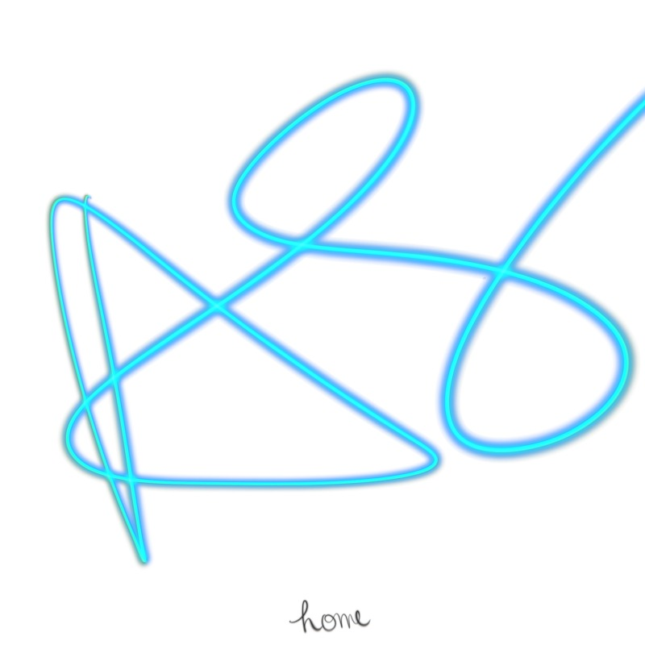

HOME
HOME est mon EP regroupant plusieurs de mes créations musicales. J'écris les mélodies, les paroles et je crée également les instrumentales.
Vous pouvez écouter quelques titres ci-dessous.

Découvrez mes créations musicales
HOME est mon EP regroupant plusieurs de mes créations musicales. J'écris les mélodies, les paroles et je crée également les instrumentales.
Vous pouvez écouter quelques titres ci-dessous.
